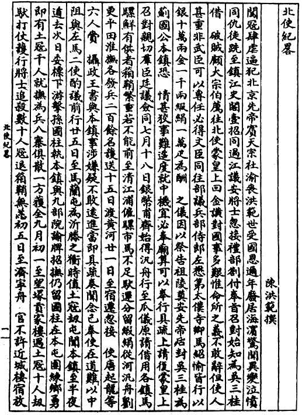
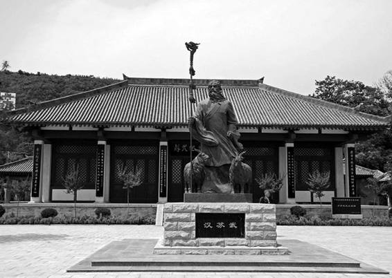

写到这里，我觉得要说明一下：以上叙述难免留下一种印象，左懋第过于硁执气节，一味刚直不屈，或致使团殊少回旋余地。不是的，左懋第汇报时专门谈到，“□语虽多，臣等应之，不肯过激，以伤酬好之意。然断不肯以一语屈抑以辱天朝之体。”[64]左懋第没有把北京作为个人爱国表演的舞台，他来此是为了严格执行朝廷的求和意图，努力替国家达到目的，只有当事关国体时才不肯退让。同时，我们也看得十分明白，从头到尾满清对和谈毫无诚意，他们已经打定主意挥师南下，夺取整个中国；他们只想看到明朝使臣屈服、屈从，对别的皆无兴趣。
就此而言，不论左懋第怎样努力，以及在一个又一个回合中怎样获得似乎扬眉吐气的胜利，也注定是失败者。在《奉使不屈疏》里，我不断读到一个字眼：折之——“臣折之”、“臣怒折之”……他在北京的每一天，不断地重复做着这同一件事。表面看，他干得非常漂亮：四夷馆改鸿胪寺了，斥退礼部、逼出刚林了，连满清鸡肠小肚所吝啬的三把坐椅也乖乖送到跟前……然而，把目光投向两国间的大势，突然会觉得这些奋力抗争、来之不易的胜利，那样微不足道。
最后，使团肩负的真正使命，一个也没完成。根本没有进行任何谈判，祭奠先帝的要求被断然拒绝，就连御书最终似乎也没有递交成功。满清只做了一件事：派人把使团所带银十万两、金一千两、缎绢十万疋，全部索讨、取走，包括本应由吴三桂亲自领取的那部分赏赐，也强行要去。南京来使终于意识到，他们原以为会与某个邻国打交道，对方却只打算以强盗面目出现。
但是，使命全部落空，责任丝毫不在使团。他们在力所能及范围内，不光做了所有能做的事，事实上恐怕还超出了他们真实的能力。这时候，我们应该把话说回来。鸿胪寺、刚林、那三把坐椅，虽然微不足道、无关痛痒，但对于1644年弱不禁风的弘光政权，已是不可思议的瞬间辉煌。除了这点成就，我甚至想不起来它还有别的更风光的时刻。
十月十五日，清廷内院、户部等官前来强取财帛。之后，使团在北京已纯属多余。多尔衮召集内院诸人，询问如何打发明使：
过此数日，（杳）无消息，令人密探，闻（夷）摄政王问内院诸人：“南来使臣，如何处他？”十王子曰：“杀了他罢！”（夷）摄政摇手。冯铨曰：“剃了他发，拘留在此！”（夷）摄政不答。洪承畴曰：“两国相争，不斩来使，难为他们，下次无人敢来了！”（夷）摄政曰：“老洪言是！”遂有放回之意矣。[65]
应该说，洪承畴人品不错，多尔衮也算是满人中有胸襟的。
十月二十六日，忽有满清某官至鸿胪寺，通知“明日可行矣”。俄顷，刚林带着十几名官员蜂拥而至。勿以为他是来送行的。“你们明早即行！我已遣兵押送至济宁，就去知你江南，我要发兵南来！”明使重申“为讲好而来”，刚林完全不耐烦：“来讲！河上可讲，江上可讲，随地可讲！”[66]再明显不过了，刚林兜里只揣着两个字：战争。这是明朝使团在北京二十余天唯一和最后的收获。
翌日一早，两名清朝军官领兵三百，到鸿胪寺，立促出京；正如刚林所说，采取押送方式，沿途“不许一人前后，一人近语”[67]，形如囚徒。十一月初一，过天津。初四，抵沧州——至此，尚无异常。
刚刚离开沧州，风云突起。《奉使不屈疏》讲述其经历：
十一月初四日，行次沧州之南，忽有□丁追至，云后面有官来讲话，不令前行。而□兵遂结营截南路矣。午后，前通使（即左懋第以为姓常而陈洪范称作“刚林之弟”者）同数□官至寓云：行得慢了，后边兵至矣。乃云令镇臣陈洪范前行，而谓臣等文官不便鞍马，在兵后行。时三臣俱在职寓。臣等应之曰，你们兵阻不肯令行，既要速，同行未尝不速。□官不应。[68]
“刚林之弟”带来命令：陈洪范一人先行。理由相当粗糙，完全不成样子——盖因不屑于有何理由——左、马是文官，不便鞍马，走得太慢。对此，左懋第当即指出：慢，是因押送清兵不让快行。“刚林之弟”理都不理，只是催促陈洪范抓紧上路。当左懋第等再次交涉，最初所谓其余人“在兵后行”的说法已变，变成不准南归、羁回沧州；也就是说，除陈洪范外，使团被扣押了。
一切，因为陈洪范叛变。
满清针对陈洪范的劝降工作，早在出使以前即已提出。六月初八，前明降将唐虞时进言：“原任镇臣陈洪范可以招抚。”[69]六月二十六日，唐虞时的建议被付诸行动，“摄政和硕睿亲王以书招故明总兵陈洪范。”[70]不过，这并不具有什么特殊含义，比如，陈洪范比别人更加适合招降，或陈洪范已经显现对明朝不忠之类。就在唐虞时提出招降陈洪范同一页，《世祖实录》记载了另一位降清将领吴惟华的进言：“故明督理漕运总兵官、抚宁侯朱国弼见在淮扬，宜遣其部将张国光谕令来归。摄政和硕睿亲王从其言，以书招谕之。”[71]就连史可法也是招降的对象，多尔衮写给他的那封著名信件，有句：“至于南州诸君子，翩然来仪，则尔公尔侯，列爵分土，有平西王典例在，惟执事图之。”[72]就是以高官厚禄和吴三桂之例劝降。进占北京后，招降纳叛是满清一大工作重点，而已经降清的前明文武官员，也纷纷迎合，自告奋勇，希以此建功。所以，唐虞时在建议招抚陈洪范后，紧接着请求清廷委派他专任此事，“乞即用为招抚总兵”，并说出理由，他的儿子唐起龙是陈洪范女婿，且曾在史可法标下为参将，“彼中将领多所亲识。乞令其赍谕往招，则近悦远来，一统之功可成矣。”[73]
陈洪范究竟什么时候叛变的？很幸运，我在《世祖实录》里发现了很具体的记载：
顺治元年甲申十一月乙酉朔……伪弘光使臣陈洪范南还，于途次具密启请留同行左懋第、马绍愉，自愿率兵归顺并招徕南中诸将。摄政王令学士詹霸等往谕，勉其加意筹画，成功之日以世爵酬谢之。遂留懋第、绍愉。[74]
十一月乙酉，即十一月初一。质之陈洪范《北使纪略》，有记：
初一日，至天津，遇后运缎绢，有夷差户部主事一员押之而北。[75]
两相参较，我们可以清楚地确定，陈洪范叛变时间是十一月初一，地点是天津，投降信是托那位押运缎绢的满清户部主事带往北京。另外，我们顺带还搞清一点，被左懋第误为“常姓通事”、陈洪范误为“刚林之弟”者，其实是内院学士詹霸，我们曾在顺治皇帝郊祭大典中见他露过面：“学士詹霸于案上捧宝投刚林”——他应是刚林的副手。或因满人发音口齿含糊，“詹”字被误听为“常”、“车”。

陈洪范《北使纪略》
和谈不果，使团返回途中，于沧州被扣，陈洪范独被放还。之后，他写了《北使纪略》来掩盖其已通敌的秘密，但于使团经历的大略情节，还是具有独家的史料价值。

陕西武功苏武墓
苏武墓所在地，如今俨然就是武功；韩城的那一座，默默无闻。但对左懋第来说，韩城苏武墓很真实，是他的精神支柱。
追溯陈洪范叛变历程，笔者认为其心迹萌动当在北京期间。使团软禁鸿胪寺，清廷除加以箝制、恐吓，亦试图利诱和收买，“摇动千端，恐吓无所不至，欲致噪变”。《奉使不屈疏》记述，十月十六日以后的数日禁抑中，满清曾以宴请、馈赠貂皮良马等分化使团，“其中不无为所惑者”，左懋第召集全体人员开会，严申纪律，而大多数成员“皆奋然作气，咸有宁死不辱之语”，正气抬升，动摇之迹因而收敛。[76]但这颇为重要的情节，陈洪范《北使纪略》却一笔未载，不知他是否就在“不无为所惑者”之列。其次，我还推测，十月二十六日刚林极为凶悍的“临别赠言”，施加了重要影响；满清直言必征江南，以双方强弱之分明，投机贪生如陈洪范，最有可能于此时“认清形势”，而决心叛变；此后经过几天思考，他写好投降信，十一月初一，伺机私自接洽那位清朝户部主事，嘱其速送北京，于是乃有初四詹霸的飞骑赶到……以上，诚然都只是笔者借一些蛛丝马迹，对陈洪范叛变经过的推理式复原，非有实据，聊供想象而已。
让我们回到“沧州之南”现场。左懋第继续写道：
（詹霸）随至镇臣洪范寓催行，臣等复至。镇臣已装载倚马将行矣……但有数十□丁促镇臣行，而镇臣遂挥泪别臣懋第。臣语之曰：“我辈不必哭。一哭则□笑我怯。我此身已许国，惟有一死断（以下以墨围遮去二十九字）……”[77]
这是令人作呕的一幕。陈洪范的哭，远比作假恶劣，何谓“猫哭耗子”，看看他就知道了。前面清廷记录甚明，沧州之变所有细节，都出自陈洪范“密启”的设计。从现场情形看，左懋第显然没有引起任何怀疑；虽然工作中他与陈洪范有过分歧和争论，但这位志诚君子，没有妄自猜忌同僚的习惯与心机，他反而安慰陈洪范“不必哭”，以免被敌人小看，并平静说出心中盘旋已久的打算。然而我们从旁观者角度，面对由陈洪范“猫哭耗子”和左懋第“惟有一死”之语构成的分别场面，实不能不感到世事之丑触目惊心。顺便交待一下，陈洪范回到南京后继续伪装，还写了《北使纪略》来掩饰；此书之作，虽出于“潜伏”需要，但经与左懋第叙述相对照，基本情节仍然可采。
陈洪范叛变与出卖，是整个使北故事的一大转折。某种意义上，是陈洪范成全了左懋第。在这以前，左懋第可圈可点，却尚不足以称为超众拔俗、世人仰慕的英雄。故事几乎就要平淡收场了，沧州之变，突然让一切峰回路转。从这儿，左懋第终于开始去完成他“当世苏武”的个人形象了。